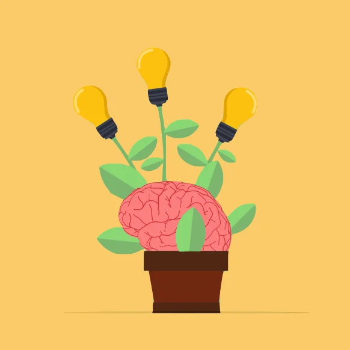

Je m'appelle Justine Raoul Madec-Cleï.
J'ai 24 ans et je suis autodidacte en développement web.
Je suis salariée du chantier numérique de La Capsule à Morlaix depuis début septembre.

Curieuse

Créative
Patiente

Permis B
- Langues :
- Français
- Anglais
- Espagnol
- Breton
- Autres :
- Bureautique
- Écrit
- Oral